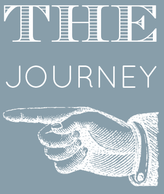
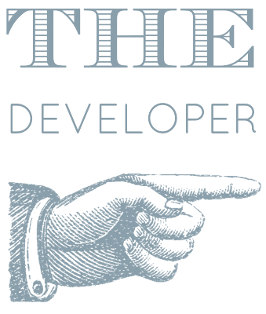

I'm passionately curious about adventure, people, and web.
I aspire to connect people with knowledge, news and each other through awesome development.
This isn't wordpress, it's code - that I built. Check out my work and if you're into reading thrillers, here's my resume.
The Yellow Faces: A play on the famous Yellow Pages that serves as a desktop photo phone book.
The Iron Links: This application serves as a professional networking site exclusive to The Iron Yard alumni.
Champazon: A mini replication of the Amazon store. The sports themed version, Champazon, features water and snow sports.
Chat in the Hat: This project was built and designed as a Dr. Seuss themed children's chat application.
The Iron Links
Final group project built to serve as a professional networking site exclusive to students who have graduated form The Iron Yard.
The site is for both employers and alumni to create profiles, search, message, and favorite one another, as well as keeping up with The Iron Yard newsfeed.
Lead on: Front end portion of user authentication, UI framework, UI of users homeview, Twitter stream
2010
Began Writing independent pieces for The Peel at Appalachian State University.
2012
Bachelors degree from Appalachian State University - Cognitive Psychology/Spanish.
2013
Landed Web Development Internship with Trio Solutions, woo hoo! Managed social media accounts.
2014
Became Web Assistant for Trio Solutions. Launching major website, SEO researcher, independent web projects and social media management.
2014
The Iron Yard Graduate. Intensive coding school studying front end engineering.
2015
Currently UX Engineer for software company in Charleston, SC - Benefitfocus.


Born and raised in North Carolina I had the joy of growing up in a Brazilian family, speaking both Portuguese and English. I've always been a visual person, I love to sketch, and have always had a keen eye for design. Other than my love for visual arts, I am fascinated with people which led me to study cognitive psychology and Spanish.
I am a proud alumni of Appalachian State University in Boone, North Carolina. I grew up around computer programming, hence catching my interest at a young age. After completing my other studies, I returned to the web world starting as an intern, followed by full time work experience, and eventually returning to study front end engineering.
Being able to combine cognitive/research psychology, design, and programming all into one field is an incredible opportunity. I love really getting into the users mind, building useful and aesthetically pleasing applications. It's challenging and appealing to me to be in a field in which I'll never stop learning. I'm excited to grow as a developer and can't wait to see what's yet to come in this industry!